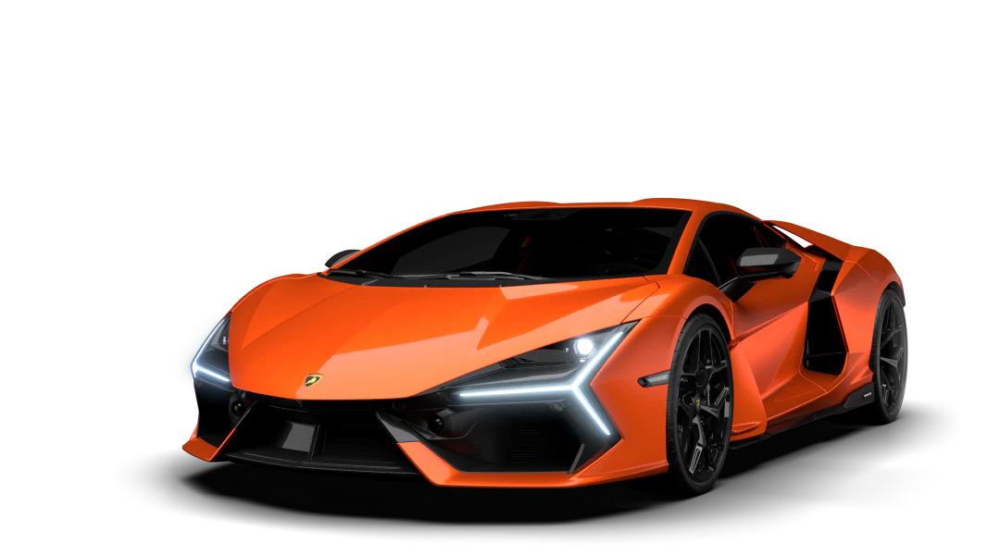
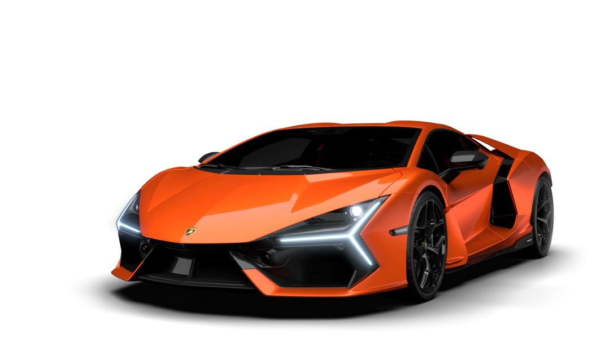

My goal is to own a car after graduation because it's a useful. It's an important in my journey toward maturity and independence. I'll be able to travel, take advantage of work possibilities, and better organize my calendar if I own a car. It also acts as an everyday reminder of my hard work and dedication to my academic career. In the end, getting a car means accepting the chances and obligations that come with becoming a newly independent person.